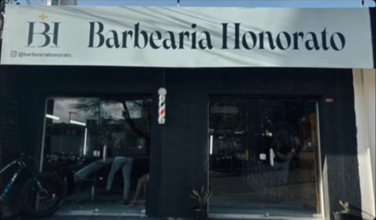

Corte, barba e sobrancelha, com hora marcada.
Atendemos de segunda a sexta, das 9h às 20h, e aos sábados até as 19h. Escolha os serviços, o dia e o horário em menos de um minuto.

Dois barbeiros, uma cadeira sempre ao seu nome.
Você escolhe o que fazer e a gente reserva o tempo certo para cada serviço. Dois profissionais atendem ao mesmo tempo, então a agenda abre mais horários.
Monte seu atendimento
Marque um ou mais serviços. O tempo total define os horários disponíveis.
Antes de vir
Preciso de cadastro para agendar?
Sim, só uma vez: nome e WhatsApp. Com o cadastro você vê e cancela seus horários em “Meus agendamentos”.
Posso marcar mais de um serviço no mesmo horário?
Pode. Marque, por exemplo, corte e barba, e o sistema soma o tempo e só mostra horários em que tudo cabe.
Quanto tempo leva cada serviço?
Barba, 30 minutos. Corte com barba, 60 minutos. Botox, 120 minutos. O tempo aparece ao lado de cada serviço.
Como posso pagar?
Dinheiro, cartão de crédito e cartão de débito.
Vocês atendem crianças?
Sim. A barbearia também tem Wi-Fi, estacionamento e acessibilidade.
Preciso cancelar ou mudar o horário.
Abra “Meus agendamentos” e cancele por lá, depois marque outro horário. Se preferir, chame no WhatsApp.
Avenida das Garças, Rio Doce
Olinda, Pernambuco. Tem estacionamento e a entrada é acessível.
Contato
(81) 97317-8238 · @barbeariahonorato_